What a wage is for, what it costs us to ask so much of it, and what to put beside it before machines can do most of the work
Drafting note, to be removed. Drafted by Claude for Stella Wilson, in her voice, from her essays, from her paper “The Unpriced Value of Time”, and from the measurements in this repository. This is the second version, rewritten from a blank page around the wage’s two jobs; the first (“Where Do People Get the Money?”) is in the repository’s history. Every number is produced by the scripts and held by
checks/check_essay.py, with two exceptions that the check lists: the figures for ordinary pay need a table that lives on another branch, and the two land-tax figures in “What about land?” (85 percent and 45 percent) are provisional. Quotations and outside facts were read at their sources, which are listed at the end. Six statements are from general knowledge and were not confirmed against a source: that property taxes fall on land and buildings together, that Social Security pays today’s pensions out of today’s wages, that there is no national tax on spending, that interest, dividends and gains are taxed as personal income, that no benefit is paid to everyone, and that the free time ordinary people have gained has come mostly as schooling and retirement. The section on time leans on argument and on shared experience more than on measurement, and says so. The judgments in “Is it fair?” and the last two piles in “How sure am I?” were made on Stella’s behalf and are hers to change.
In 1930, with the Depression setting in, the economist John Maynard Keynes wrote a short essay about the world his grandchildren would live in. He made two predictions for a hundred years on. The first was that “the standard of life in progressive countries one hundred years hence will be between four and eight times as high as it is to-day.” The second was that with so much plenty we would hardly need to work. “Three-hour shifts or a fifteen-hour week” would be enough, and our real problem would be how to fill the time.
The usual verdict is that he was half right. We got the wealth. Output per person in the United States in 2024 was 7.8 times its level in 1930, at the top of his range with six years still to run. We did not get the time. The forty-hour week was written into American law by an act of 1938, and the law still says forty.
I think that verdict lets us off too lightly, because the fifteen-hour week did arrive. It is sitting in the national statistics. An hour of work in American business in 2024 produced two and a half times what an hour produced in 1973. What took a forty-hour week to make then takes sixteen hours now.
And we did not work less. Per head of population, the hours worked in American business in 2024 were 10 percent higher than in 1973. As a country, we took the whole of that half-century’s progress as more output and none of it as time.
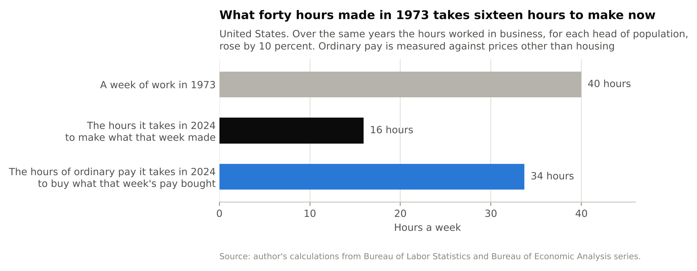
Nobody wants to live exactly as people did in 1973, and that isn’t the point. Some of those extra hours are women who went out to work, which nobody should want undone. The point is that an economy able to make in sixteen hours what used to take forty has an enormous amount of freed time somewhere inside it, and none of it, on balance, has reached the people doing the work as time.
There is a third number. To buy what forty hours of ordinary pay bought in 1973, an ordinary American worker in 2024 has to work thirty-four hours. So there are two things to explain. The first is the gap between sixteen and thirty-four: most of what the extra productivity made went somewhere other than ordinary pay. The second is that even the part that did reach ordinary pay arrived as more things and not as shorter weeks.
This essay tries to explain both with one idea, and then asks what happens to each of them if machines become a great deal better than they are. The idea is about what a wage is for. I have spent a long time on it, with a co-author, a small economy built on paper and a great many national accounts, and this is everything I think I know.
Three things before we start. The numbers are American. I live in Sweden, but the United States publishes the accounts this needs, in the open and in enough detail, and I’d expect other rich countries to differ in the particulars and to keep the same shape. Second, some of what follows is measured, some comes out of a model, some is argument, and some is only what I feel to be true. The question about time turns out to be one that our statistics are built in a way that cannot answer, so there I lean on argument and on what I think most people can feel for themselves. I’ll say which is which as I go, and near the end I sort the claims into piles. Third, it is long. I looked for a short version that was also true and didn’t find one.
It does three jobs, and we rarely notice that they are different jobs.
A wage is a price. It tells a business what an hour of someone’s time costs, so that the hour gets used where it is worth most, and it tells people which work is wanted. An economy is, among other things, a way of finding out what people want and what they are willing to do for it, and prices are how it listens. This is the job economists have in mind when they talk about wages, and a wage is good at it.
A wage is also a ticket. It is how nearly everyone gets a share of what is made. Bread reaches me because I have money, and I have money for one reason, which is that I sold some hours. Nothing about this is a law of nature. It is an arrangement, and it has worked so well for so long that we have stopped seeing it as one.
And a wage is a place. It gives the day a shape, puts you among other people, and tells you that somebody needs you.
One thing can do three jobs only for as long as the jobs pull the same way. For about two centuries they did. My claim is that they have been coming apart for some time, and that asking one thing to be both a price and a ticket damages each. The ticket spoils the price, which is why we cannot take our wealth as time. The price shrinks the ticket, which is why the gains of fifty years have mostly gone somewhere else, and why better machines are a threat to people who ought to be glad of them.
Before either of those, it is worth seeing how much is riding on this one thing.
Follow one dollar. You hand it over in a bakery for a loaf of bread. The bakery keeps none of it for long. Some goes to the baker as wages. Some goes to the landlord. Some goes to the mill that sold the flour, and the mill does the same thing with its share. Keep following and every cent eventually comes to rest in one of a few places.
Some of it is pay to a person for working. Some of it is a payment to whoever owns something that was built: the oven, the truck, the mill, the company itself. Somebody paid for those things before they earned anything, and this is the return on having done so. Some of it is a payment to whoever owns something that nobody built: the ground under the bakery, the oil under the ground. The rest is tax on the product, or goes abroad to pay for imports. Economists call the first three labor, capital and land. I’ll say work, machines and land, with “machines” standing in for everything that was built and “land” for everything that wasn’t.
This chase can be done for real. The Bureau of Economic Analysis, the agency that keeps America’s national accounts, publishes tables of what every industry buys from every other and what each pays out. The economist Wassily Leontief worked out in the 1930s how to follow a dollar through tables like these to the end, and was given the Nobel prize in economics for it in 1973. Run his method on the tables for 2023, the latest full year as I write, and the average dollar a household spends comes apart like this: 12 cents leaves the country for imports, 8 cents is tax on the product, 53 cents is pay for work, and 27 and a half cents goes to the owners of machines and land.
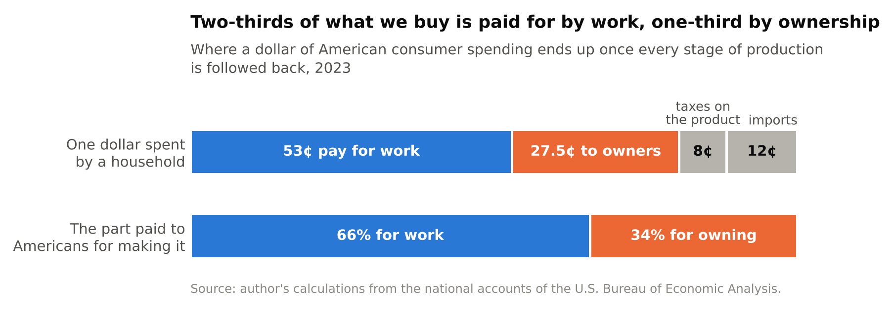
Set the tax and the imports aside and look only at what is paid to Americans for making the thing. Work gets 66 percent of it and ownership gets 34. I get the same 66 percent a second way, from separate records, by asking households where the money they spent came from. So two-thirds of what we buy is paid for by work, and one-third is paid to people for owning things, with no work asked of them.
That would be a curiosity if every household got two-thirds of its income from pay and a third from ownership. Hardly any does.
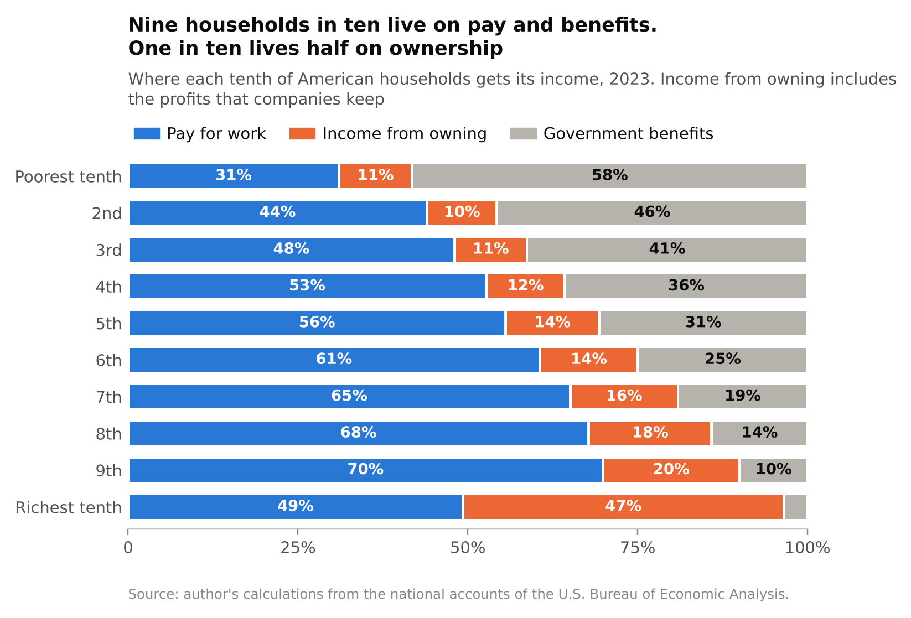
The chart sorts American households into tenths, from poorest to richest, and shows what each tenth lives on. The poorest tenth lives mostly on government benefits. From the second tenth to the ninth the picture barely changes: of what these households earn in the market, about four-fifths is pay for work. Then, in the richest tenth, it changes all at once. There, pay and ownership are about half and half. That tenth earns a bit over a third of all the pay for work in the country and receives two-thirds of all the income from ownership.
Benefits and pensions look like a second ticket for the other nine-tenths. They are less separate than they look. A benefit is paid out of taxes, and 68 cents of every tax dollar in America is raised from pay for work (somewhere between 63 and 73, depending on how you classify the taxes on mixed kinds of income). A public pension paid from this year’s payroll taxes is a claim on this year’s wages under another name.
So follow the money far enough and most of us turn out to be living on each other’s wages. We live off the earth and off the machines we have built on it. But the route by which nine households in ten get their part of what the earth and the machines produce runs through one narrow channel, which is being paid for work.
Because of the kind of machine we had.
A machine can do something for you in only two ways. Either it needs you, or you own it. Suppose houses are built by people with tools. I can’t build a house, but I can do something else that people want, and I trade my hours for the builders’ hours. Better tools make the house cheaper, and I share in that, because the house still can’t be built without people and people are who I am trading with. Now suppose houses are built by machines alone. The house is cheaper still. But I have nothing to trade for it. The machine doesn’t want my hours. It wants nothing from me at all. The house reaches me only if I own a piece of the machine, or if someone who does chooses to pass it on.
The machines of the industrial age needed people badly. They were strong and stupid. They could lift, spin, stamp and haul, and they couldn’t see, judge or decide. Nearly everything worth making took both kinds of ability at once, so every new machine created work for the people standing next to it, and the owners of machines had to bid against each other for those people. While that lasted, the price of an hour rose with everything else, and a ticket made of that price was a good ticket. Nobody’s generosity came into it.
Economists have a careful version of this. Daron Acemoglu, who shared the Nobel prize in economics in 2024, and Pascual Restrepo describe production as a long list of tasks, each done by whichever of a person or a machine does it more cheaply. New technology can take tasks over from people, which in their analysis “reduces employment and the labor share, and may even reduce wages.” Or it can create new tasks that people are better at, which “has the opposite effects.” Nothing in the logic says which will win. It depends on what kind of machine is being invented, and the kind being invented now can see, read, write and decide. I write software for a living and use these systems every day, and I find it harder each year to name a kind of work that is safely out of their reach.
This is the first thing to explain: the gap between the sixteen hours it takes to make what forty made in 1973 and the thirty-four hours of ordinary pay it takes to buy it.
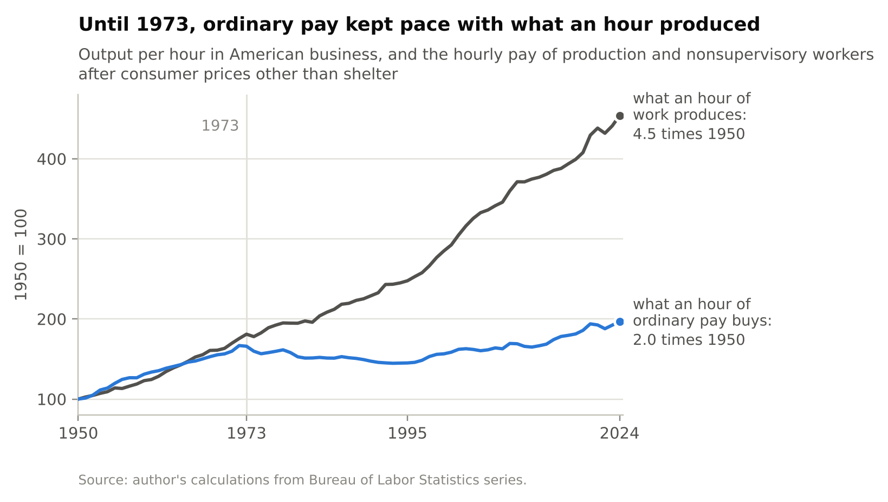
From 1950 to 1973 the two moved together. What an hour of work produced rose by 81 percent, and what an hour of ordinary pay could buy rose by 66 percent. By ordinary pay I mean the hourly pay of everyone on a private payroll who isn’t a manager or a supervisor, measured against the prices of everything except housing. Then they parted. Between 1973 and 2024 the output of an hour rose two and a half times, and an hour of ordinary pay came to buy 19 percent more.
I can account for some of the difference. About two-fifths of it is pay spreading out among workers, so that the average pulled away from the ordinary worker. A fifth is income moving from pay to ownership. The remaining two-fifths I can’t separate cleanly: it is a mixture of the things workers buy rising in price faster than the things they make, of benefits taking the place of wages, and of the measures not lining up.
The part that moved from pay to ownership is the smaller part, and it would suit my argument better if it were the larger. But look at what the larger part is. Acemoglu and Restrepo estimate that between 50 and 70 percent of the change in America’s wage structure over the four decades to 2016 came from “relative wage declines of worker groups specialized in routine tasks in industries experiencing rapid automation.” On that estimate, a large part of the spreading-out happened because machines learned to do what ordinary workers did before they learned to do what the best-paid did.
Both parts are the same thing happening. A wage is a price, and a price follows scarcity. It does not follow effort, and it does not follow need. The day a machine learns your job, you are working exactly as hard as you did the day before, and your hour is worth less. That is how a price is supposed to behave, and it is a fine way to decide who should do what. It is a strange way to decide who gets to live well. A ticket made of a price is worth what your particular hour is worth to someone else, this year, given everything a machine can now do instead.
That is what I mean by the price shrinking the ticket. So far it has happened slowly, and mostly inside the wage bill. Between 2004 and 2023 the part of households’ market income (what they earn before taxes and benefits) that is pay for work fell from 71 percent to 66. I will come back to what happens if it falls much further.
This is the second thing to explain. Ordinary pay did rise, by a fifth, which could have been six hours off the week at the same standard of living. The country as a whole could have taken far more. Instead the hours went up, and I don’t think that is because nobody wanted the time.
Start with what a price is. When I pay three dollars for a loaf of bread, the baker learns something true about me: the bread was worth at least three dollars to me, because I could have walked away. A wage is supposed to carry the same kind of information in the other direction. If I take a job at fifteen dollars an hour, the hour must have been worth less than fifteen dollars to me, or I would have kept it. A great deal of economics leans on that inference. It is how governments put a cost on the labor that a project uses up, and it is why a job that somebody is willing to do is assumed to be a job worth doing.
The inference works only if I could have said no. If selling hours is the only way I eat, I will sell them for whatever they fetch, and the wage records how badly I needed the money. It says very little about what the hour was worth to me. It might have been an afternoon with my child, or a visit to my mother, or the Tuesday I would have spent running the club. Those lost a contest they were never allowed to enter. I have written out a formal version of this argument elsewhere. The plain version is that an auction in which one side can’t walk away tells you very little about what the thing was worth.
This is the ticket spoiling the price. Because the wage is the ticket, most people cannot refuse it, and a price that cannot be refused has stopped being a price.
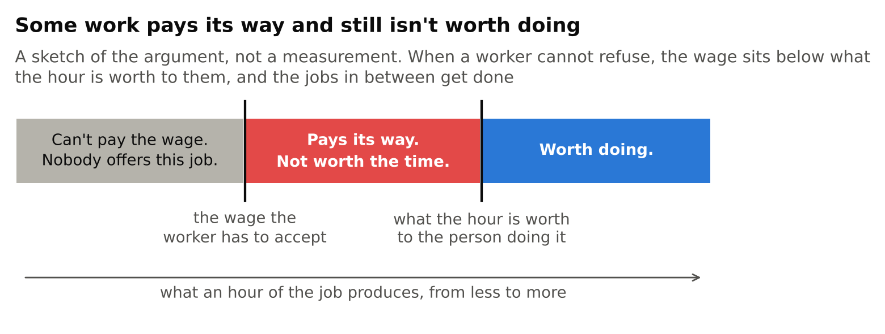
Two things follow. The first is that some work gets done that isn’t worth doing. Take any job that produces a little more than the wage it pays and less than the hour is worth to the person doing it. The job covers its costs. The employer is doing nothing wrong. And every hour of it uses up something worth more than what it makes, with the whole of the loss falling on the worker. I call this make-work, and the trouble with it is that nobody can see it. All the prices look fine.
The second is that our economy has no way of saying “enough.” Other markets can say it. When there is more of something than people want, its price falls and less of it gets made. The market for work can’t, because for the person selling, the price falling far enough means not eating. So we have arranged things to keep that signal from ever arriving. We count jobs as a good in themselves, when in any careful accounting the labor a project uses is a cost, because it is somebody’s time. We treat every hour sold as proof that the hour was wanted. I once asked a friend why we assume that everyone ought to be working, and she said of course they should, she’d like to be able to buy more stuff. It’s a fair answer, and it contains an assumption, which is that every extra hour worked makes more of what we want. Labor is a resource, like water, and we don’t drain the oceans looking for a use for every drop.
I can’t put a number on what this costs, and the reason I can’t is part of the argument. Everything we measure about work, the hours, the wages, the share of people with jobs, is a record of what people did when they could not refuse. It is like trying to learn how much people like a food by watching what they buy when it is the only thing on the shelf. So here I’ll do something I avoid everywhere else in this essay, and ask you to consult your own experience.
Do the people you know have more free time than their parents had at the same age? In a country that has made itself two and a half times as productive within one working lifetime, do they seem less pressed? When they do take time, for a new child or a dying parent, does it feel like something they are free to choose, or like something they will pay for later? And of the things that seem to have thinned out around you, the visits, the clubs, the neighbors who knew each other, how many were things that anyone was ever paid to do?
I don’t offer that as evidence. I offer it because I think the answers are not much in doubt, and because a broken price for time predicts exactly this: that we would feel it everywhere and be unable to show it anywhere.
There are three pieces of evidence of a harder kind, and they point the same way without settling the matter.
The first is where free time did arrive. Ordinary people have gained a good deal of it over the last century, and most of it came at the two ends of life, as longer schooling and longer retirement. Those are the two stretches of life that come with a ticket that isn’t a wage: a parent or a loan at one end, a pension at the other. In the middle, where the only ticket is the wage, the week is still forty hours.
The second is Alaska, which since 1982 has paid every resident a yearly dividend out of a fund built from its oil revenues. The economists Damon Jones and Ioana Marinescu found that the dividend “had no effect on employment” and that part-time work rose by 1.8 percentage points. Employment did not fall, and more people worked part-time.
The third is an experiment. The only sure way to learn what people’s time is worth to them is to make refusing possible and watch what they do, and researchers in the United States have done that. They gave 1,000 low-income people $1,000 a month for three years, with no conditions. Those people received $11,400 a year more than a comparison group, and their other income ended up about $1,900 a year lower. They took roughly a sixth of the money as time and kept the rest. They worked one to two hours a week less, and in the authors’ words “the greatest increase generated by the transfer was in time spent on leisure.” The authors call the whole effect “a moderate labor supply effect,” and they found no improvement in the quality of the jobs people held.
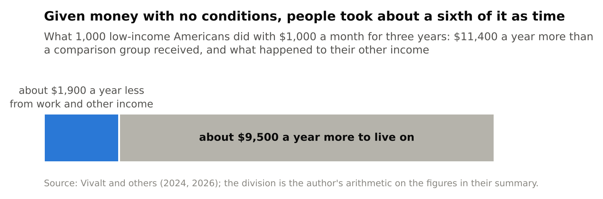
I read that as a caution against my own argument as much as support for it. People who could refuse a little did refuse a little. But for most of them, most of the time, more money was more urgent than more time. My guess is that the effect would be larger over a lifetime than over three years, because nobody can rearrange a life around money that is about to stop. That is a guess.
It would be pleasant to call all this a waste that could be recovered for nothing. It can’t be, and the reason matters for everything that follows. The person who would gain from being able to say no has nothing to pay for the privilege with. That is their whole situation. So the gain can be had only if somebody else funds the floor they stand on. It is a real gain that arrives looking like a handout, and I think that is why arguments about work and welfare go round in circles. Each side is right about the half it is looking at.
Hold on to that, because the question of who could fund such a floor turns out to have the same answer as the question about where the gain went.
So far both failures have been slow. They took fifty years to open as far as they have. Nobody knows whether machines are about to get much better, or how fast. What I can do is show what happens in an economy where they do, provided the rules of that economy are written down plainly enough to be worked out. That is all an economic model is: a small economy on paper, simple enough to solve and fitted to the real one wherever the two can be compared. The one I’ll use has five rules.
Fitted to the United States of the mid-2020s, this economy pays 60 percent of its income for work, 31 percent to the owners of machines and 9 percent to the owners of land. (That 60 is measured a little differently from the 66 above. The difference doesn’t matter for what follows.) Now turn one dial. Let machines get better at every task, in step, until they are a hundred times better relative to people than they are today, and let them gradually learn to build one another without human help.
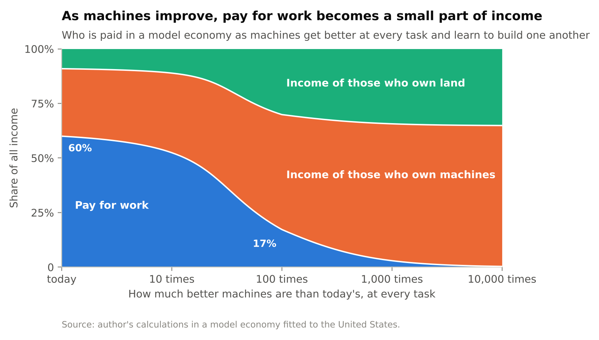
Very little happens at first. When machines are ten times better, work is still paid 52 percent of all income, because people move to the tasks where their advantage is greatest and there is plenty for them to do. Then, when machines are about 35 times better, a threshold is crossed. The machines that could replace even the hardest hour of human work now take less than an hour of human work to build. After that no wage can stay above the cost of the machine that would do the job. By the hundredfold point work is paid 17 percent of all income. At ten thousand times it is paid less than 1 percent, with 65 percent going to the owners of machines and 35 to the owners of land.
The part that surprised me is that nobody in this economy gets poorer.
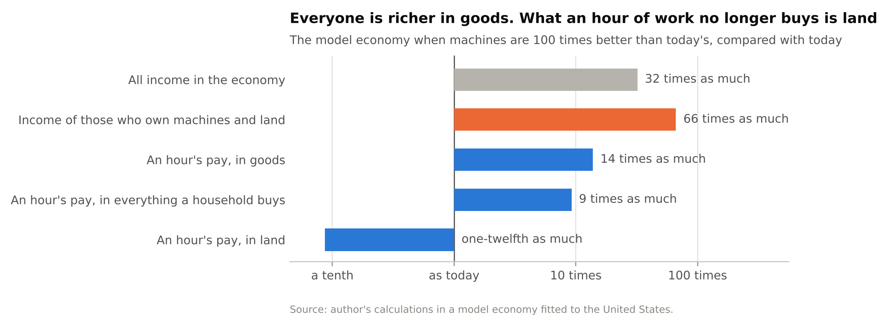
At the hundredfold point total income is 32 times what it was. An hour of work buys 14 times as many goods as it does today. What an hour of work stops buying is land. The rent of land rises about a hundredfold, and an hour’s pay rents about a twelfth of the land it does now. The income of those who own machines and land is 66 times what it was. And past the hundredfold point wages stop: the hourly wage levels off at around ten times today’s, while the economy goes on to grow more than fiftyfold again.
Notice what this does to the two jobs. As a price, the wage is working perfectly. It is telling everyone, accurately, that human hours are no longer what production is short of. As a ticket it has all but failed. It delivers a sixth of the income at the hundredfold point and almost none in the end, in the middle of the largest boom there has ever been.
I expected the winners to be the owners of land, the one thing that can’t be made. Land does well, and its share of income more than triples. But the larger winners are the people who own machines, whose share goes from 31 percent to 53 and then to 65. No machine is scarce, since you can always build another. But building takes time, and whoever puts up the money waits for it and wants paying for the wait. As machines take over more of the work there are vastly more of them, over fifty times as many at the hundredfold point, and each still pays its owner the going rate. If investors came to accept 5 percent a year where they now want 10, the same model gives land the larger share and machines the smaller. The share paid for work comes out about the same either way.
Who would this fall on? An economy counts votes in dollars. If ownership stayed as it is today and work were paid 17 percent of income, the richest tenth of American households would receive 62 percent of all market income, up from 46. The four tenths below them would go from 39 percent to 28, and the poorer half from 14 and a half to 10. People sometimes hope that an economy like that would seize up for want of customers, and that the owners would have to keep everyone else in work out of self-interest. It wouldn’t. The owners are the customers. The economy would turn to face them, and make more of what they want and less of what everyone else wants. There is no law of economics that says an economy has to be for everybody.
Three cautions. The dial measures technology and not time. A hundredfold improvement takes 117 years at 4 percent a year, which is the pace at which machinery improved for its price in the decades after the Second World War, on a well-known measurement by the economists Cummins and Violante. At 10 percent a year it takes 48 years, and at 20 percent, 25. I don’t know which is closest to what’s coming, and neither does anyone else.
The outcome also depends on the first rule. If there is no ceiling on human advantage, so that there are always some tasks where one person is worth any number of machines, the same dial lowers work’s share to 48 percent and stops there. Economists disagree about this, with serious work on each side. Francesco Caselli and Alan Manning showed in 2019 that new technology is unlikely to lower the wages of all workers, and that it raises the average wage as long as machines keep getting cheaper relative to consumer goods. Anton Korinek and Donghyun Suh showed in 2024 that wages collapse if the tasks people can perform are bounded in difficulty and all of them come to be automated. My own guess is that the ceiling is real for most people at most tasks. I hold that loosely.
And the model is a model. It has no unemployment in it, no monopolies and no politics. It has one kind of worker, so it cannot show what the last fifty years showed, which is that average pay can rise while ordinary pay stands still.
There are two problems here with one cause. We ask the wage to be a price and a ticket. Being the ticket, it can’t be refused, so it has stopped pricing time. Being a price, it follows scarcity, so it is a ticket that shrinks whenever a machine learns something. The repair is to stop asking. Leave the wage to be a price, which it is good at, and give people a second ticket.
The only real question is what a second ticket can be made of, and two of the obvious answers fail.
It can’t be made of wages. A benefit paid out of today’s taxes is, for 68 cents in the dollar, wage earners paying each other. It moves the ticket around without making a second one, and it shrinks when wages do.
It can’t be made by taxing what machines earn, which was my own first answer. In the model, put a 20 percent tax on what machines earn their owners. Once everything has adjusted, the tax raises 6.3 percent of national income. Wages fall by 6.1 percent of national income. The economy as a whole is 6.5 percent smaller. If every dollar the tax raised were handed straight to wage earners, they would end up 0.3 percent better off than before the tax existed.
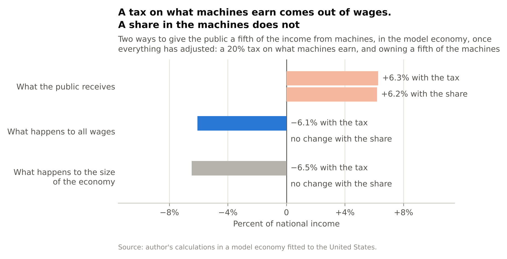
Here is what happens. Investors build machines up to the point where the last one just pays the return they require. Tax the return, and the last machine no longer pays. So they build fewer, and keep cutting back until machines are scarce enough to earn the old return after tax. The owners end up with the same rate of return on a smaller pile, about a fifth smaller in the model. The people who work alongside machines have fewer machines to work with, produce less, and are paid less. The tax has gone straight through the owners and landed on the wage. The same logic is behind a classic result in the study of taxation, due to Christophe Chamley and Kenneth Judd in the 1980s: in the long run, the best tax rate on the income from capital is zero. The result has been challenged, by Ludwig Straub and Iván Werning in 2020, and it rests on investors being free to hold back. In the short run they aren’t, because the machines already exist. Over a generation, I believe the model.
What the model does allow is taking the same fifth by owning it. There are two ways to come to own a fifth of the machines. One is to buy them, as any investor does, which at today’s prices costs about a year of the whole country’s wages. The other runs through the tax system. Suppose a company may deduct the full cost of every investment from its taxable profit on the day it makes it. Then on every new machine the government is, in effect, putting up a fifth of the cost, through the tax it gives up, and collecting a fifth of what the machine earns. That is a partnership. The investor’s return on their own four-fifths is untouched, so they build as many machines as before. The public gets its fifth of the income, which is 6.2 percent of national income in the model, and wages and the size of the economy don’t change. The catch is the machines that already exist on the day the rule changes. Nobody put up a fifth of their cost on the public’s behalf, so for their owners this is a one-time loss of about a fifth, and it should be called what it is.
So the second ticket has to be made of the other third of the dollar. It has to be ownership.
Land is the exception to the rule about taxes, for one reason. Nobody makes it. Tax machines and there will be fewer machines. Tax land and there is as much land as before, in the same places.
This is an old idea with a distinguished history. Thomas Paine, the pamphleteer of the American Revolution, argued in 1797 that “Man did not make the earth,” so that “every proprietor therefore of cultivated land, owes to the community a ground-rent,” and he proposed paying it into a national fund from which every person would receive a sum of money on turning twenty-one. “It is not charity but a right,” he wrote. Eighty years later Henry George, a self-taught American journalist, built a whole movement on the same point with a book called Progress and Poverty. His formula was: “It is not necessary to confiscate land; it is only necessary to confiscate rent.”
I reached this idea on my own before I had heard of either of them, which I’ve decided to find encouraging. And for a while I believed a tax on land was most of the answer. The numbers talked me out of that. The rent of the ground under America’s homes, as distinct from the buildings on it, came in 2024 to between 4.3 and 7.1 percent of households’ disposable income, which is between $2,776 and $4,627 a year for every person in the country. That is real money, and it is not what a country can live on. The reason it is so small is competition. Imagine two iron mines with different owners, either of which could supply everyone. Each will undercut the other until the price of ore covers the cost of digging it up and no more, and the rent on both is nothing. Rent is paid only for what has no second source, and most of what we take from nature has one. An economy can’t both have resources to spare and live on the rent from them.
Land matters more the further the dial turns, since its share more than triples in the model. And it matters already for housing, which is the one large thing we buy that work hardly makes. Work makes 74 percent of everything else in the household budget and 23 percent of shelter. That is part of why productivity has not turned into free time. An hour of work makes far more than it did, and a place to live is not made by hours of work.
The difficulty is the people who own land now. The price of a piece of land is the rent it is expected to earn, added up over the future, so a tax that takes the rent takes the price, on the morning it is announced, from whoever happens to own it. My rough calculation is that a land tax large enough to pay every American adult about $250 a month would take something like 85 percent off the value of residential land, and that owners over sixty-five would make 45 percent of the net payments. I don’t think that should be done to people. Paine didn’t either. “The fault, however, is not in the present possessors,” he wrote. So tax only the growth. Leave every owner the rent they receive today and collect what is added from here on. That takes the part of today’s price that was a bet on future growth, which by the usual arithmetic is about 40 percent of the land’s value, against 85. For a house whose value is three-tenths to a half land, that is 12 to 20 percent off the price. It is still a real loss, and I think it is a fair division between people who bought in good faith and a public with a claim on what nobody made.
For the United States, with sizes, it comes to three changes.
| What America does now | What would change | |
|---|---|---|
| Company profits | Taxed at 21 percent by the federal government. All levels of government raised $608 billion from them in 2023, for their general budgets. | The same rate, with investment deductible in full. The revenue becomes the income of a public stake of about a fifth, and is paid out to everyone equally. |
| Land | Taxed only together with the buildings on it, through property taxes, which raised $697 billion. | A tax on the growth of land rent is added. The rent that owners receive today is left alone. |
| Saving for old age | 12.4 percent of wages goes to Social Security, which pays today’s pensions out of today’s wages. | A further 5 percent of pay is saved into invested accounts that belong to the worker. |
| Taxes on work | 68 percent of all tax revenue is raised from pay. Payroll contributions alone are a quarter of everything collected. | Payroll contributions are replaced, step by step, by a tax on spending that raises the same amount. |
The first change is a share held in common. Suppose a fifth of all the machines and land in the country were held on behalf of everyone, and what that fifth earned were paid out equally. In 2023 it would have paid $4,493 a person, or $374 a month, for every man, woman and child. That is more than Social Security pays out per head of population. Most of that fifth is within reach without buying anything. Today’s tax on company profits, turned into a stake, is worth 8 percent of all ownership income. A tax on the growth of land rent collects nothing in its first year and about two-fifths of the rent after twenty-five years of growth at 2 percent a year, which comes to another 5 to 8 percent. Together that is about a seventh of all ownership income, and a public fund could buy the rest.
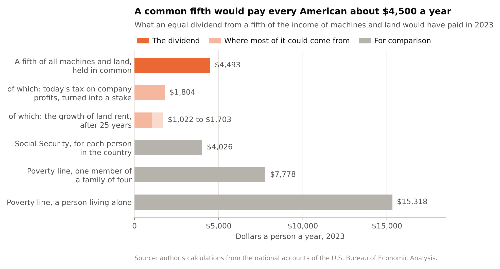
A dividend can sound like free money, so I should be plain about what this costs. It isn’t new income. It is a fifth of the income that machines and land already earn, paid to different people. The part that comes from the profits tax is money that governments spend today, so paying it out means finding $608 billion a year somewhere else. The part from land comes out of gains that landowners were expecting. And whatever a fund buys, somebody pays for, by spending less in the meantime.
The second change is ownership bought out of wages. A common share can protect the poorer half of households: about a seventh held in common is enough to keep their share of the nation’s market income from falling at all, even if wages went to nothing. It cannot do the same for the comfortable middle, the four tenths of households above the halfway mark. They earn nearly half of all the pay in the country, and no common share short of six-sevenths of everything would keep them whole. They have to buy their ticket. With the common fifth in place, saving 5 percent of pay and reinvesting what it earns at 5 percent a year would do it in 34 years, which is a working life. America already takes far more than that from wages for retirement, 12.4 percent, for Social Security. But Social Security owns nothing. It pays this year’s pensions out of this year’s wages, which makes it one more claim on the wage.
The third change is to move taxes off the wage. Sixty-eight cents of every tax dollar is raised from pay, so the safety net depends on the same thing as the incomes it is there to protect. A broad tax on spending follows the spending, wherever the income behind it came from. Today the switch would change little, because pay for work covers 66 percent of what households buy. At the hundredfold point in the model, five-sixths of a tax on spending would be paid out of ownership income. The tax would have followed the money without anyone passing a new law.
None of this is untried. Alaska’s dividend paid $1,312 a person in 2023 and $1,702 in 2024, to more than 600,000 people each year, and the fund behind it is worth $88 billion. Norway’s national fund, bought with oil money over a generation, owns in its own words “almost 1.5 percent of all shares in the world’s listed companies,” and the small part of it the government is allowed to spend each year “still amounts to almost 20 percent of the government budget.” And Sweden, where I live, puts 2.5 of the 18.5 percent of pay that goes toward the public pension into invested accounts that belong to the worker.
There is one more thing to say about it, and it is the result in all of this that worries me most.
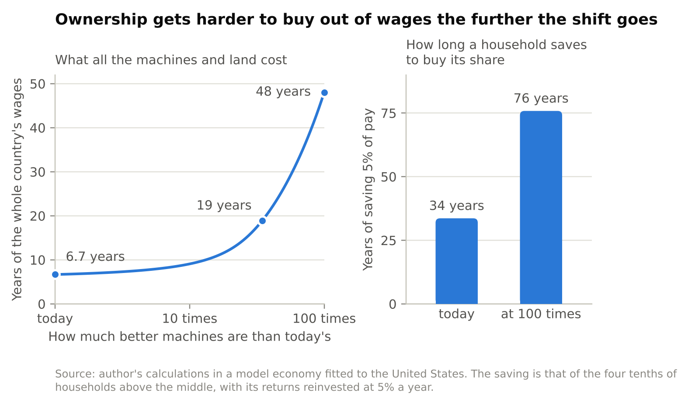
Today, everything that pays ownership income in the model economy, every machine and every acre, is worth about 6.7 years of the whole country’s wages. That is the price of a second ticket, measured in the only currency most households have. At the threshold it is 19 years. At the hundredfold point it is 48. The saving that takes a household in the comfortable middle 34 years today takes 76 years there. The households that most need a second ticket are the ones who would have to buy it out of wages, and wages are the thing losing its value. Waiting to see whether the shift is real means waiting until the people it hurts can no longer afford the cure.
Take the question of who gets the gains, in the hard case where work is paid 17 percent of income.
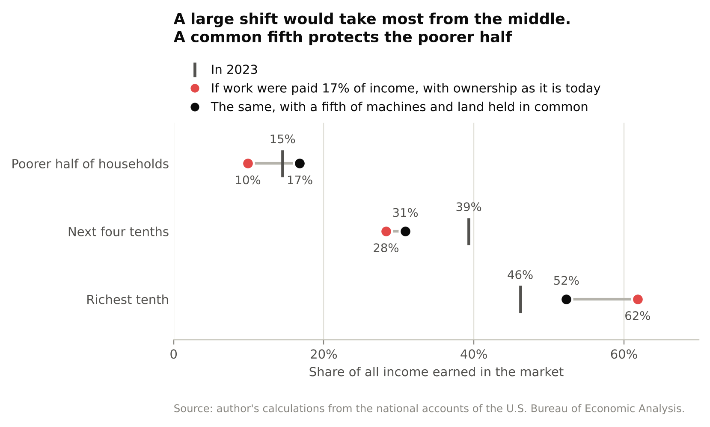
With ownership as it is today, the richest tenth’s share of market income goes from 46 percent to 62. With a fifth held in common it goes to 52, and the poorer half ends up with 17 percent, which is more than it has now. The comfortable middle still falls, from 39 percent to 31, and that remaining gap is what the saving is for. A household that holds both tickets in the right proportions keeps its share of a growing total whatever happens to the split between work and ownership. What it loses on its paycheck it gains on what it owns.
The question of time mends more slowly, and I can say less about it. A dividend of $374 a month is 58 percent of the poverty line for one member of a family of four and 29 percent for a person living alone. Nobody retires on it. But it is a floor that is not made of wages, and it grows as the wage shrinks: in the model the income of a common fifth is 13 percent of all wages today and 96 percent of all wages at the hundredfold point. As it grows, refusing becomes possible, a little and then more, and the wage goes back to being a price that means something. And because the floor is paid out of something everyone holds a share in, people are in large part paying themselves. That is the answer to the question I left hanging about who funds it.
This is not a universal basic income in the usual sense, though everyone gets it and there are no conditions. A basic income is a promise of a certain amount, paid for out of taxes that rest on wages. This is the income of something people own, whatever that turns out to be. A full basic income is, for what it’s worth, more affordable than it has ever been.
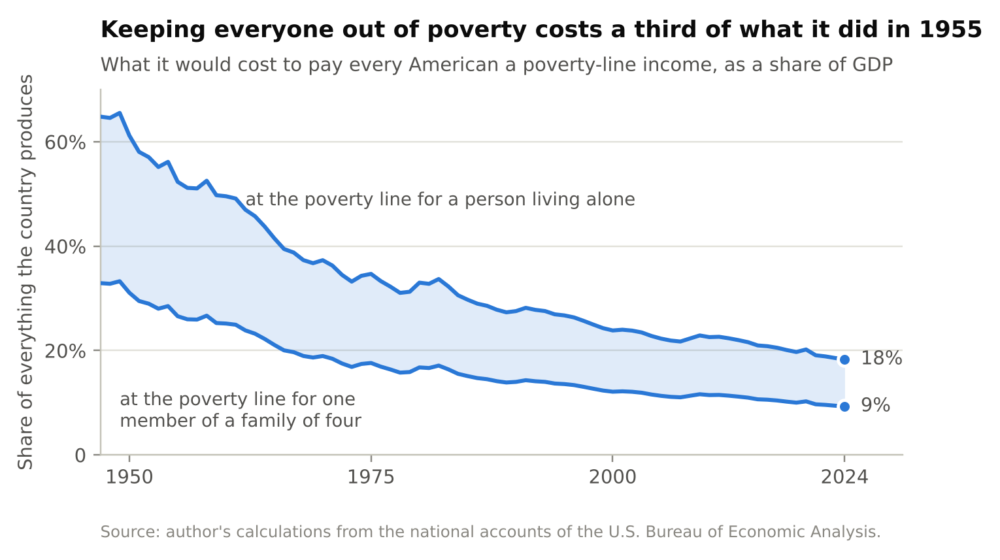
In 1955, paying every American a poverty-line income would have cost between 27 and 52 percent of everything the country produced, depending on whether you price it for a member of a family of four or for a person living alone. In 2024 it would cost between 9 and 18 percent. That is the sixteen-hour week again, seen from the other side. But raised through today’s tax system it would be raised mostly from wages, and it would leave who owns what as it is. I would rather build the thing that grows.
Keynes’s fifteen-hour week needed two things. It needed the wealth, which came. And it needed ordinary people to be able to choose time over money, which means being able to turn work down without going hungry. A household with a second ticket could make that choice. How many made it would tell us something we have never been able to measure.
Most of this can be defended without any appeal to fairness. Moving taxes off wages raises the same money from a base that isn’t shrinking. Swapping the tax on profits for a stake raises almost the same money and, in the model, undoes the damage of the tax, which was an economy 6.5 percent smaller and wages lower by 6.1 percent of national income. Saving out of wages is ordinary prudence. But in a few places somebody loses, and then a judgment about who ought to hold what can’t be avoided. I’d rather make it in the open.
The standard I’ll use is the one most often offered in defense of things as they are: that people are entitled to what they contribute, and that what you are paid measures what you add. I think that is a reasonable standard. My complaint is that we don’t apply it.
Hold the kinds of income up to it. A wage is paid for work, which is a contribution if anything is. The return on a machine is paid to someone who went without something in order to build it, and saving is a contribution too. The rent of land is paid for something that nobody made, and holding the title adds nothing to it. Now look at what America taxes. It raises 68 percent of its revenue from pay for work, the most plainly earned income there is. Its tax on what machines earn falls, in the model, largely on wages again. And it taxes land only in a bundle with the buildings on it, which somebody did build. By its own favorite standard, the country taxes most heavily what is most clearly earned. The program is that standard applied all the way through.
The standard has a flaw, and I’ve already described it. What you are paid measures what would be lost if you stopped, and that depends on what else could do your job. It rewards scarcity at least as much as effort. So push it. Suppose machines can do nine-tenths of all work, and the remaining tenth can be done only by a tenth of the people. The standard doesn’t break. It still says that those who work should keep their pay and those who saved should keep their return. It has less and less to say, because less and less of all income is anyone’s contribution.
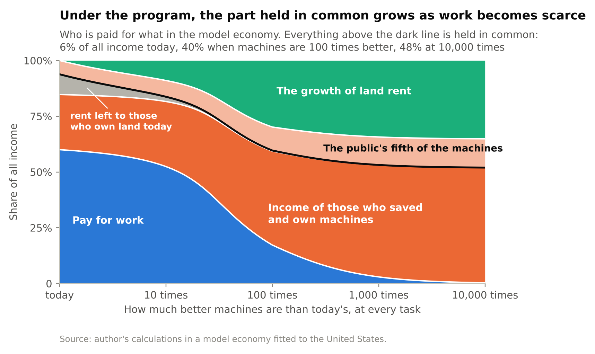
With the program in place, pay for work goes from 60 percent of all income today to 17 at the hundredfold point and to less than 1 in the end. What is held in common, the public’s fifth of the machines plus the growth in land rent, goes from 6 percent of all income today to 40 at the hundredfold point and 48 in the end. The remaining 52 percent goes to those who saved. That is about half. If I had proposed at the outset that half of all income should follow contribution and half be shared equally, you would have been right to call the number arbitrary. I didn’t choose it. It is where the contribution standard arrives by itself when work becomes scarce, given a public stake of the size America already takes and an economy that needs land.
Two things remain plain choices. One is the size of the stake. I’ve used a fifth because America already levies about that, and I have no deeper reason. The other is the person who can contribute nothing and owns nothing. The contribution standard has nothing to say about that person. A second principle is needed, that nobody should be left with nothing, and the dividend is how the program meets it.
And there is timing. Today, getting a second ticket is a trade. Households put aside some of their pay and buy ownership from people willing to sell it, and each side is paid in full for what it gives up. After a large shift, the same move is a transfer from those who gained to those who lost, and it costs more than twice as many years of saving. We are in the before. None of us knows for certain which side of the line our own work will fall on, and I can’t think of a better condition for agreeing on a rule.
It doesn’t fix the third job. A wage is a place as well as a price and a ticket: a reason to get up, somewhere to be at nine, a way of being needed by somebody. A second ticket replaces none of that, and I don’t want to pretend otherwise.
What it might do is make room. There is a room in Stockholm that I think about, a clubhouse where a gaming association lets teenagers spend their afternoons. Kids who have nowhere else to be go there. It exists because of a public grant. No business would have built it, since there is no money in a place for lonely teenagers to be less lonely. Most of what seems to have gone missing in my lifetime is like that room. None of it was ever paid. All of it takes time, and time is what a household living on wages alone has to sell.
A dividend doesn’t build that room. Somebody still has to find the premises and do the boring organizing. But it lets the person who would run it on Tuesdays afford to. I can’t prove the rooms would come back. I think some would. An income can be paid out of what we own together. A place among other people has to be made by people, and it is one of the few things I’m confident the machines will leave to us.
I said I would sort the claims.
Measured, from public accounts, with every figure reproducible: that an hour of work makes two and a half times what it did in 1973, that an hour of ordinary pay buys a fifth more, and that Americans work more hours per head than they did then; that two-thirds of what Americans buy is paid for by work; that nine households in ten live mostly on pay and one in ten receives two-thirds of the ownership income; that 68 percent of taxes rest on pay; the size of land rent; and the falling cost of keeping everyone out of poverty.
From a model, and true to the extent that its rules hold: what happens when machines improve a hundredfold; that a tax on what machines earn lands on wages; that ownership costs more in years of wages the further the shift goes; and that the common part of income rises to about half.
From argument, with modest evidence behind it: that a wage which cannot be refused says little about the worth of an hour, that some work is done which isn’t worth doing, and that our economy has no way of saying “enough.”
From nothing firmer than my own judgment: that the dial will keep turning, and faster than it has; that human advantage has a ceiling for most of us at most tasks; that a good deal of today’s work would not be done if the people doing it could afford to refuse; that most of us would take more of our wealth as time if we could; and that a country where a tenth of the households receive three-fifths of the income, and the other nine-tenths have the votes, will not stay calm.
There are things I have left out. I gave every household the same average shopping basket, and renters are worse placed than that makes them look. I lumped the richest tenth together, though ownership is concentrated within it. The model has no risk in it, and real households that hold shares can lose money on them. And everything here is American.
What would change my mind? Three gauges are worth watching: the share of what we buy that is paid for by work, which was 71 percent in 2001 and 66 in 2023; the price of ownership in years of wages; and who owns what. If the first of those rises for a decade, I’m wrong about the direction. In that case the program will have cost a tax reform, a savings plan and a modest dividend, and I wouldn’t regret any of them.
Because the only ticket most of us hold is a wage. A wage can’t be refused by someone who needs it to eat, so the freed time inside a rich economy has no way of reaching the people who freed it. And a wage is a price, so it goes where scarcity goes, which for fifty years has been toward the people whose work machines couldn’t yet do and toward the people who own the machines.
That is the arrangement Keynes didn’t see. He assumed that a society eight times as rich would simply work less, and it turns out that working less is something you can do only if you hold something besides your work. The wealth came to us as a country. The time would have had to come to us one household at a time, and most households had no way to receive it.
I would be glad to be wrong about where the machines are heading. But very little of this depends on that. Sixteen hours now make what forty made, and we work more hours than we did. If the machines do get much better, the same arrangement turns from a waste of time into a loss of livelihood, and the remedy, which is a second ticket, gets dearer with every point that work’s share falls. It is the same remedy in both cases. That seems to me reason enough to begin while a year’s pay still buys what it buys today.
How this was made. I wrote this with Claude, Anthropic’s AI model, which did the measurements with me, drew the figures and drafted most of the text from my earlier essays. The model economy is joint work with Johan Båge. Every number comes from code in a public repository, with checks that fail if the text and the data disagree, and every quotation was read at its source.
The measurements are my own calculations from the national accounts of the U.S. Bureau of Economic Analysis: the input–output accounts, the distribution of personal income and of consumer spending by tenth of households, and the accounts of government receipts and benefits. Output per hour, hours worked and the wage series are from the Bureau of Labor Statistics. The poverty line is that of Mollie Orshansky, “Children of the Poor,” Social Security Bulletin 26(7), 1963, updated for prices.
Works quoted or relied on, in the order they appear: